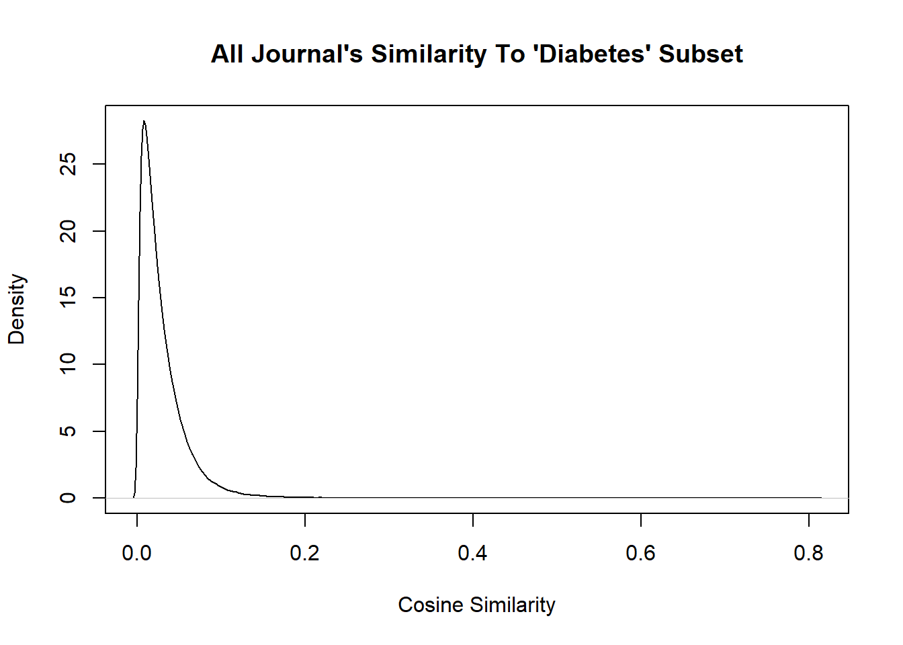
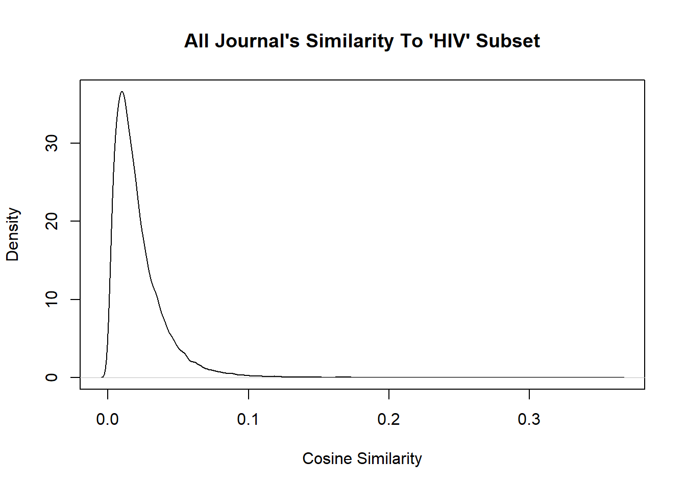
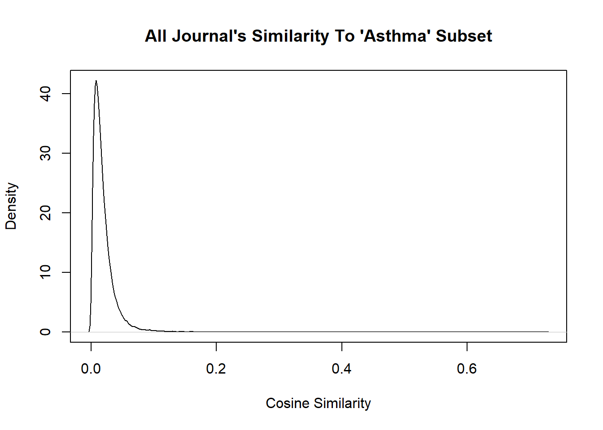

UNDER DEVELOPMENT
Motivation:
Academic literature information extraction is a fascinating subject. There is a big push to automate information extraction. This project is focused on how a whole journal corpus may be compared to another using their abstract text content. Journal corpus similarity could be a useful feature to use during other information extraction tasks. True subject matter is difficult to determine based on a cursory glance at the title and a few published articles. Additionally, a journal’s or whole field’s range of topics could shift over time because of new tools, job responsibilities, and knowledge (eg Radiology and Genetics are radically different than in 1900, their academic journals likely reflect these changes).
Therefore, it could be useful to classify journals based on the text that they publish. PubMed Baseline includes article abstracts as well as metadata like Grant Agency, University Affiliation, Date, and Authors. These fields allow the linkage of other data sources.
Overview
brief overview hitting subtitles and key words
Datasets
This analysis uses PubMed data to compare subgroups of journals. The database is called PubMed Baseline. I used a subset of the PubMed Baseline. Arguably, there would be a shift in popularity and word usage among journal topics which could take extra processing to normalize. It was simpler to take a snapshot of journals and sidestep this issue for now.
XML Parsing
PubMed Baseline data is stored in many zipped XML files. Each XML file contains data from many articles.
I downloaded and decompressed a selection of the Baseline files with a typical Bash script.
#!/bin/bash
## LOCALLY
# Download files from ftp://ftp.ncbi.nlm.nih.gov/pubmed/baseline/
wget -P ~/tmp/ ftp://ftp.ncbi.nlm.nih.gov/pubmed/baseline/pubmed20n1* # define file set
# For each file downloaded check md5
md5sum --check ~/tmp/pubmed*.xml.gz.md5
# Unzip .gz files
gzip -d ~/tmp/pubmed*.gz
# Remove md5 files
rm -f ~/tmp/pubmed*.xml.gz.md5
# Move files to HDFS
#hdfs dfs -put *.xml /user/sm9553/projectThe spark-xml package from Databricks, primarily developed by Hyukjin Kwon, was used to parse the XML files into a Spark DataFrame.
/** Parse XML to DataFrame */
val pubmed =
sqlContext.read.format(
"org.apache.spark.sql.xml"
).option("rootTag", "PubmedArticle"
).load(
"tmp/PubMed.xml"
)These steps will become a serious bottleneck if many XML files need to be parsed into a Spark format. To be a true map-reduce workflow, this step as well as the XML parsing should be distributed. In another life I ought to wget, parse xml files, and extract the few necessary fields in the map phase, then reduce/join everything into a single Spark DataFrame for intermediate storage on HDFS.
Lemma Array Generation
The Stanford CoreNLP package was used to break down AbstractText strings into lemmas. Part of speech tags were generated for each lemma to filter out uninformative elements, such as coordinating conjunctions and prepositions. At this stage there are 5591 unique JournalTitles in the corpus and 112,405 unique lemmas across all JournalTitles.
/** extract abstracts and extra info */
var abstractsEtc =
pubmed.select(
$"MedlineCitation.PMID",
$"MedlineCitation.Article.Abstract.AbstractText",
$"MedlineCitation.Article.Journal.Title".as('journalTitle)
).withColumn(
"AbstractText", concat_ws(" ", col("AbstractText"))
)
/** explode sentences */
var lemmas =
abstractsEtc.select(
'PMID, 'journalTitle,
explode(ssplit('AbstractText)).as('sentence)
).select(
'PMID, 'journalTitle,
explode(lemma('sentence)).as("lemma")
).withColumn("pos", pos('lemma) )
/** filter out useless pos-types, make a udf */
val filtLemmas =
lemmas.filter(
'pos(0).rlike("[^(DT)(CD)(CC)(IN)(LS)(SYM)(TO)(\\.)(\\,)(\\;)(\\:)]")
)
/** group by */
var journalLemmas =
filtLemmas.select(
'journalTitle,
'lemma
).groupBy("journalTitle").agg(collect_list("lemma") as "lemma")A snapshot of this Spark DataFrame from the terminal

TF-IDF Features
Lemma arrays were converted to TF-IDF feature vectors in the following way. The Spark ML package was used to hash lemmas. The number of features for the hash function was set to 2^17, above 5591 to avoid collisions and set as a power of 2 to increase calculation speed. Spark ML was also used to calculate IDF for the hashed lemma vectors. IDF values were rescaled to generate TF-IDF values.
var numFeatures = 131072
val hashingTF =
new HashingTF(
).setInputCol("lemma").setOutputCol("rawFeatures").setNumFeatures(numFeatures)
val journalhashedLemmas = hashingTF.transform(journalLemmas)
val idf = new IDF().setInputCol("rawFeatures").setOutputCol("features")
val journalIdfModel = idf.fit(journalhashedLemmas)
val journalrescaledData = journalIdfModel.transform(journalhashedLemmas)
val journalDense =
journalrescaledData.select(
"journalTitle", "features").withColumn("features", asDense($"features"))A snapshot of this Spark DataFrame from the terminal

Subgroup Comparison
I chose subgroups to be highly specific and not even remotely selective – if the journal title contains the word “Diabetes”, “Asthma”, or “HIV”. The subgroups were selected using simple RegEx patterns.
val diabetes_journalDense =
journalDense.filter(
'journalTitle.rlike("(\\b[Dd]iabet)")).select(
'journalTitle.alias("journalTitle_subset"), 'features.alias("features_subset"))
val asthma_journalDense =
journalDense.filter(
'journalTitle.rlike("(\\b[Aa]sthma)")).select(
'journalTitle.alias("journalTitle_subset"), 'features.alias("features_subset"))
val hiv_journalDense =
journalDense.filter(
'journalTitle.rlike("(\\b[Hh][Ii][Vv])")).select(
'journalTitle.alias("journalTitle_subset"), 'features.alias("features_subset"))Here is a short exploration of the three groups.
The number of journals in each group:
list(
distinct_all = n_distinct(asthma$journal_x),
distinct_asthma = n_distinct(asthma$journal_asthma),
distinct_diabetes = n_distinct(diabetes$journal_diabetes),
distinct_hiv = n_distinct(hiv$journal_hiv)
) %>% as.data.frame( row.names = "n_journals")## distinct_all distinct_asthma distinct_diabetes distinct_hiv
## n_journals 5591 5 40 8Three of the journal titles from each group:
asthma$journal_asthma %>% unique() %>% head(3)## [1] "Journal of asthma and allergy"
## [2] "The Journal of asthma : official journal of the Association for the Care of Asthma"
## [3] "Annals of allergy, asthma & immunology : official publication of the American College of Allergy, Asthma, & Immunology"diabetes$journal_diabetes %>% unique() %>% head(3)## [1] "Diabetology & metabolic syndrome" "Journal of diabetes research"
## [3] "JMIR diabetes"hiv$journal_hiv %>% unique() %>% head(3)## [1] "Southern African journal of HIV medicine"
## [2] "Current HIV research"
## [3] "Current HIV/AIDS reports"Exploring the results
Cosine similarity
Each group was passed to the pairwise cosine similarity user-defined-function (UDF) to be compared against the whole set. I used the UDF from this stack answer
A table of cosine similarities for these three groups vs the whole set was exported to my local environment to analyze in R.
val cosSimilarity = udf { (x: Vector, y: Vector) =>
val v1 = x.toArray
val v2 = y.toArray
val l1 = scala.math.sqrt(v1.map(x => x*x).sum)
val l2 = scala.math.sqrt(v2.map(x => x*x).sum)
val scalar = v1.zip(v2).map(p => p._1*p._2).sum
val cosineSim = scalar/(l1*l2)
"%.6f".format(cosineSim).toDouble
}
val joinedDf =
journalDense.join(diabetes_journalDense, 'journalTitle =!= 'journalTitle_subset)
val cosSimDf =
joinedDf.withColumn("cosine_sim", cosSimilarity('features_subset, 'features)).select(
'journalTitle, 'journalTitle_subset, 'cosine_sim)Highest cosine similarity scores for each group:
These are the two highest cosine similarity pairs for each journal in each group.
asthma_top_sim <- unique(asthma$journal_asthma[!(asthma$journal_x %in% asthma$journal_asthma)]) %>%
purrr::map_dfr(
~ asthma[!(asthma$journal_x %in% asthma$journal_asthma),] %>%
dplyr::filter(journal_asthma == .x ) %>%
dplyr::arrange(desc(cosine_similarity)) %>%
head(2)
)
asthma_top_sim## # A tibble: 10 x 3
## journal_x journal_asthma cosine_similari~
## <chr> <chr> <dbl>
## 1 Allergy Journal of asthma and allergy 0.213
## 2 NPJ primary care respira~ Journal of asthma and allergy 0.175
## 3 Allergy The Journal of asthma : official ~ 0.337
## 4 The journal of allergy a~ The Journal of asthma : official ~ 0.287
## 5 Pediatric clinics of Nor~ Annals of allergy, asthma & immun~ 0.208
## 6 International archives o~ Annals of allergy, asthma & immun~ 0.208
## 7 The European respiratory~ Allergy, asthma, and clinical imm~ 0.202
## 8 Respiratory research Allergy, asthma, and clinical imm~ 0.198
## 9 Allergy Asthma research and practice 0.207
## 10 The journal of allergy a~ Asthma research and practice 0.188diabetes_top_sim## # A tibble: 80 x 3
## journal_x journal_diabetes cosine_similari~
## <chr> <chr> <dbl>
## 1 Nutrients Diabetology & metabolic syndrome 0.270
## 2 PloS one Diabetology & metabolic syndrome 0.268
## 3 Pediatric dimensions Journal of diabetes research 0.229
## 4 Nature metabolism Journal of diabetes research 0.219
## 5 Monographs of the Societ~ JMIR diabetes 0.237
## 6 JMIR mHealth and uHealth JMIR diabetes 0.236
## 7 Progress in cardiovascul~ Diabetes therapy : research, trea~ 0.347
## 8 BMJ (Clinical research e~ Diabetes therapy : research, trea~ 0.220
## 9 The Journal of endocrino~ Diabetes 0.226
## 10 Frontiers in endocrinolo~ Diabetes 0.209
## # ... with 70 more rowshiv_top_sim## # A tibble: 16 x 3
## journal_x journal_hiv cosine_similari~
## <chr> <chr> <dbl>
## 1 AIDS research and therapy Southern African journal o~ 0.210
## 2 Journal of the International AI~ Southern African journal o~ 0.205
## 3 Natural product communications Current HIV research 0.172
## 4 Journal of life sciences (Westl~ Current HIV research 0.142
## 5 AIDS care Current HIV/AIDS reports 0.360
## 6 AIDS and behavior Current HIV/AIDS reports 0.358
## 7 AIDS and behavior Current opinion in HIV and~ 0.437
## 8 AIDS care Current opinion in HIV and~ 0.412
## 9 AIDS and behavior Journal of HIV/AIDS & soci~ 0.288
## 10 AIDS care Journal of HIV/AIDS & soci~ 0.277
## 11 AIDS care HIV/AIDS (Auckland, N.Z.) 0.267
## 12 AIDS and behavior HIV/AIDS (Auckland, N.Z.) 0.266
## 13 AIDS and behavior HIV medicine 0.380
## 14 Journal of the International AI~ HIV medicine 0.377
## 15 The lancet. Diabetes & endocrin~ The lancet. HIV 0.726
## 16 BJS open The lancet. HIV 0.675Note how most top cosine similarities are in the range of 0.1 to 0.3. These are rather low values, so it might be useful to preprocess this data in a way that amplifies similarity.
Similar journals by group
These are the top percentiles of cosines for each group. I selected the top 97.5%-ile for Diabetes and HIV, while lowering the percentile to 75% for the Asthma group to get a similar length output.
ingroup_asthma_cossim <-
asthma$cosine_similarity[asthma$journal_x %in% asthma$journal_asthma]
asthma$journal_x[asthma$cosine_similarity >
quantile(ingroup_asthma_cossim, probs = 0.75) &
!(asthma$journal_x %in% asthma$journal_asthma)]## [1] "The European respiratory journal"
## [2] "Pediatric pulmonology"
## [3] "Canadian respiratory journal"
## [4] "Expert review of respiratory medicine"
## [5] "Lung India : official organ of Indian Chest Society"
## [6] "Zhonghua nei ke za zhi"
## [7] "Pediatric clinics of North America"
## [8] "The journal of allergy and clinical immunology. In practice"
## [9] "Allergy"ingroup_diabetes_cossim <-
diabetes$cosine_similarity[diabetes$journal_x %in% diabetes$journal_diabetes]
diabetes$journal_x[diabetes$cosine_similarity >
quantile(ingroup_diabetes_cossim, probs = 0.975) &
!(diabetes$journal_x %in% diabetes$journal_diabetes)]## [1] "The British journal of dermatology"
## [2] "The Lancet. Respiratory medicine"
## [3] "Journal of nutritional science"
## [4] "Vox sanguinis"
## [5] "Lancet (London, England)"
## [6] "Public health nutrition"
## [7] "PloS one"
## [8] "Journal of the American Heart Association"
## [9] "The Lancet. Global health"
## [10] "British journal of haematology"
## [11] "Clinical physiology and functional imaging"
## [12] "Nutrients"
## [13] "Progress in cardiovascular diseases"
## [14] "BJS open"
## [15] "The Lancet. Infectious diseases"
## [16] "The Lancet. Neurology"
## [17] "Journal of Taibah University Medical Sciences"
## [18] "The British journal of surgery"
## [19] "The Lancet. Child & adolescent health"
## [20] "The Lancet. Oncology"
## [21] "The Lancet. Planetary health"
## [22] "The Lancet. Haematology"
## [23] "The lancet. HIV"ingroup_hiv_cossim <- hiv$cosine_similarity[hiv$journal_x %in% hiv$journal_hiv]
hiv$journal_x[hiv$cosine_similarity >
quantile(ingroup_hiv_cossim, probs = 0.975) &
!(hiv$journal_x %in% hiv$journal_hiv)]## [1] "Virologie (Montrouge, France)"
## [2] "Vaccine: X"
## [3] "Current immunology reviews"
## [4] "AIDS care"
## [5] "Virologie (Montrouge, France)"
## [6] "AIDS care"
## [7] "The British journal of dermatology"
## [8] "The Lancet. Respiratory medicine"
## [9] "Journal of nutritional science"
## [10] "Vox sanguinis"
## [11] "Lancet (London, England)"
## [12] "Public health nutrition"
## [13] "AIDS care"
## [14] "Vaccine"
## [15] "The Lancet. Global health"
## [16] "The lancet. Diabetes & endocrinology"
## [17] "British journal of haematology"
## [18] "Clinical physiology and functional imaging"
## [19] "Journal of the International AIDS Society"
## [20] "AIDS and behavior"
## [21] "Journal of the International AIDS Society"
## [22] "AIDS and behavior"
## [23] "AIDS and behavior"
## [24] "Journal of the International AIDS Society"
## [25] "BJS open"
## [26] "The Lancet. Infectious diseases"
## [27] "AIDS and behavior"
## [28] "The Lancet. Neurology"
## [29] "AIDS (London, England)"
## [30] "AIDS (London, England)"
## [31] "AIDS (London, England)"
## [32] "The British journal of surgery"
## [33] "The Lancet. Child & adolescent health"
## [34] "The Lancet. Oncology"
## [35] "The Lancet. Planetary health"
## [36] "AIDS research and human retroviruses"
## [37] "Journal of acquired immune deficiency syndromes (1999)"
## [38] "AIDS research and human retroviruses"
## [39] "AIDS research and human retroviruses"
## [40] "The Lancet. Haematology"
## [41] "AIDS research and therapy"
## [42] "AIDS research and therapy"Interestingly the HIV group has more similar journals than the Diabetes group. This could be mostly because I excluded “AIDS” in the RegEx pattern to select the group.
Quantile Comparisons
The final analysis and visualization steps were completed in R. Each 10th quantile of cosine similarities were calculated for each group using stats::quantile. The distribution of cosine similarities in each set is concentrated towards 0 with long tails trailing towards 1. It is to be expected that most cosine similarities will be closer to 0 since most journals will be dissimilar to each group. A thin distribution tail contains the relatively few journals that are similar. Within group quantiles were also calculated to determine if the pattern matching technique yielded groups that were internally more similar than the whole corpus.
density(diabetes$X3) %>%
plot(main = "All Journal's Similarity To 'Diabetes' Subset", xlab = "Cosine Similarity")
density(asthma$X3) %>%
plot(breaks = 100, main = "All Journal's Similarity To 'HIV' Subset", xlab = "Cosine Similarity")## Warning in plot.window(...): "breaks" is not a graphical parameter## Warning in plot.xy(xy, type, ...): "breaks" is not a graphical parameter## Warning in axis(side = side, at = at, labels = labels, ...): "breaks" is not a
## graphical parameter
## Warning in axis(side = side, at = at, labels = labels, ...): "breaks" is not a
## graphical parameter## Warning in box(...): "breaks" is not a graphical parameter## Warning in title(...): "breaks" is not a graphical parameterdensity(hiv$X3) %>%
plot(breaks = 100, main = "All Journal's Similarity To 'Asthma' Subset", xlab = "Cosine Similarity")## Warning in plot.window(...): "breaks" is not a graphical parameter## Warning in plot.xy(xy, type, ...): "breaks" is not a graphical parameter## Warning in axis(side = side, at = at, labels = labels, ...): "breaks" is not a
## graphical parameter
## Warning in axis(side = side, at = at, labels = labels, ...): "breaks" is not a
## graphical parameter## Warning in box(...): "breaks" is not a graphical parameter## Warning in title(...): "breaks" is not a graphical parameter
Within Group Similarity Quantiles
# get list of diabetes articles
diabetesArticleNames <- unique(diabetes$X2)
asthmaArticleNames <- unique(asthma$X2)
hivArticleNames <- unique(hiv$X2)
# compare cosine similarity values in quantiles of each group
diabetes[(diabetes$X1 %in% diabetesArticleNames),]$X3 %>% quantile(probs = seq(0, 1, 0.1))
asthma[(asthma$X1 %in% asthmaArticleNames),]$X3 %>% quantile(probs = seq(0, 1, 0.1))
hiv[(hiv$X1 %in% hivArticleNames),]$X3 %>% quantile(probs = seq(0, 1, 0.1))This code chunk produces the table:
| Subgroup | 10 | 20 | 30 | 40 | 50 | 60 | 70 | 80 | 90 |
|---|---|---|---|---|---|---|---|---|---|
| Diabetes | 0.0115 | 0.0358 | 0.0565 | 0.0838 | 0.1074 | 0.1402 | 0.1715 | 0.2033 | 0.2548 |
| Asthma | 0.0253 | 0.0286 | 0.0373 | 0.0896 | 0.1358 | 0.1669 | 0.2097 | 0.2627 | 0.3244 |
| HIV | 0.0245 | 0.0454 | 0.0814 | 0.0922 | 0.1255 | 0.1597 | 0.1742 | 0.2013 | 0.2405 |
Characteristics of these deciles:
- all groups seem to be similar from 40% to 70%
- asthma journals are more similar to eachother as a whole (down to lowest quantiles)
- diabetes and hiv have similar low quantile patterns, a few outliers made longer tails
- the highest top similarities are in diabetes, appearing at the 90% quantile
- the lowest top similarities are in hiv with no big spike, rather a slow decline
Estimated difference of quantiles
The R package WRS2 was used to calculate quantile differences between each group. The function qcomb was run on each of the following pairs: Diabetes-Asthma, Diabetes-HIV, Asthma-HIV. The output values include estimated difference for each quantile, a standard p-value, and a p.crit value.
This final step uses the Harrell-Davis quantile estimator to get better info on tails. This estimator is a weighted average of all order statistics. The shift fx is then used to compare HD estimates to find confidence interval differences between quantiles.
# Average cosSim for all unique journal titles
# an equivalent chunk computes asthaAve and hivAve
diabetesAve <- diabetes %>%
group_by(X1) %>%
summarise(journalTitle = X1[[1]], cosSim = mean(X3)) %>%
ungroup() %>%
select(journalTitle, diabetesCosSim = cosSim)## `summarise()` ungrouping output (override with `.groups` argument)joinedTable <- full_join(full_join(hivAve, diabetesAve, by = "journalTitle"),
asthmaAve,
by = "journalTitle")
joinedTableLong <- joinedTable %>%
pivot_longer(cols = c("hivCosSim", "diabetesCosSim", "asthmaCosSim"),
names_to = "JournalGroup",
values_to = "CosineSimilarity"
)
diabetes_asthma <- WRS2::qcomhd(CosineSimilarity ~ JournalGroup,
data = filter(joinedTableLong, JournalGroup != "hivCosSim"),
q = seq(from = 0, to = 1, by = 0.1), nboot = 100)
diabetes_hiv <- WRS2::qcomhd(CosineSimilarity ~ JournalGroup,
data = filter(joinedTableLong, JournalGroup != "asthmaCosSim"),
q = seq(from = 0, to = 1, by = 0.1), nboot = 100)
asthma_hiv <- WRS2::qcomhd(CosineSimilarity ~ JournalGroup,
data = filter(joinedTableLong, JournalGroup != "diabetesCosSim"),
q = seq(from = 0, to = 1, by = 0.1), nboot = 100)
diabetes_asthma_diff <- tibble(quantile = diabetes_asthma$partable$q,
estimatedDiff = diabetes_asthma$partable$`est1-est.2`,
criticalPVal = diabetes_asthma$partable$p.crit)
diabetes_hiv_diff <- tibble(quantile = diabetes_hiv$partable$q,
estimatedDiff = diabetes_hiv$partable$`est1-est.2`,
criticalPVal = diabetes_hiv$partable$p.crit)
asthma_hiv_diff <- tibble(quantile = asthma_hiv$partable$q,
estimatedDiff = asthma_hiv$partable$`est1-est.2`,
criticalPVal = asthma_hiv$partable$p.crit)Plots of group pairwise quantile differences

words

hgsl

gshgwp

pcivpc
Aside from the 0 percentile estimate, all standard p-values and p.crit values were below 0.05, while most were below 0.01. All pairwise comparisons show a high degree of similarity in the 40th and 60th percentile range.
The most stark difference is in the 80th quantile and above. Diabetes-Asthma and Diabetes-HIV are the most dissimilar in the upper quantiles. This indicates that the group Diabetes is more distinct than the groups HIV and Asthma.
Conclusion, Mistakes, Next Steps..
The workflow described in this paper can be customized to group vectors for any of the metadata fields in PubMed. For example, grant agency, author affiliation, year, and MESH terms are all loaded in the beginning of the workflow. They could easily be incorporated into an analysis.
Highly skewed distributions are difficult to characterize because most estimators focus on the maximum area of a distribution. In the case of cosine similarity in a large corpus, the distribution tail will contain the most useful information. This workflow, and other similar workflows, allow researchers to gather information that might not be readily apparent with a standard statistical approach.
Next Steps
Theoretically a clever individual could take this similarity information and explore related connections to join silos of related academic information.
It should also be possible to make larger inferences about the industry which the journal covers. To do this one could extract terms that are highly correlated with specific journals or combinations of journals. For example, Radiology journals have recently included the term “deep learning” in many top articles. The crossover of terms from ML to Radiology indicates the adoption of new technology. This has healthcare and business implications. It would be possible to extract these emerging terms over all of PubMed to discover changes and partnerships among industries. With the additional metadata it would also be possible to determine where these changes are occurring (by city, hospital, or university) and who is funding this research.
The works cited from my paper
Some of these sources were noted and linked directly in this page, other sources contributed to ideas and understanding.
Allen, E. A., Erhardt, E. B., Calhoun, V. D. (2012). Data Visualization in the Neurosciences: Overcoming the Curse of Dimensionality. Neuron, 74(4), 603–608. https://doi.org/10.1016/j.neuron.2012.05.001
Altınel, B., Can Ganiz, M., Diri, B. (2015). A corpus-based semantic kernel for text classification by using meaning values of terms. Engineering Applications of Artificial Intelligence, 43, 54–66. https://doi.org/10.1016/j.engappai.2015.03.015
amoeba. (2016, October 4). What’s the formula for the Benjamini-Hochberg adjusted p-value? [Forum Comment]. Cross Validated. https://stats.stackexchange.com/questions/238458/whats-the-formula-for-the-benjamini-hochberg-adjusted-p-value/402217
Anscombe, F. J. (1973). Graphs in Statistical Analysis. The American Statistician, 27(1), 17. https://doi.org/10.2307/2682899
Benjamini, Y., Heller, R., Yekutieli, D. (2009). Selective inference in complex research. Philosophical Transactions of the Royal Society A: Mathematical, Physical and Engineering Sciences, 367(1906), 4255–4271. https://doi.org/10.1098/rsta.2009.0127
Benjamini, Y., Hochberg, Y. (1995). Controlling the False Discovery Rate: A Practical and Powerful Approach to Multiple Testing. Journal of the Royal Statistical Society: Series B (Methodological), 57(1), 289–300. https://doi.org/10.1111/j.2517-6161.1995.tb02031.x
Databricks. (n.d.). Databricks spark-xml. GitHub. https://github.com/databricks/spark-xml
Doan, S., Yang, E. W., Tilak, S. S., Li, P. W., Zisook, D. S., Torii, M. (2019). Extracting health-related causality from twitter messages using natural language processing. BMC Medical Informatics and Decision Making, 19(S3), 19. https://doi.org/10.1186/s12911-019-0785-0
Felizardo, K. R., MacDonell, S. G., Mendes, E., Maldonado, J. C. (2012). A Systematic Mapping on the use of Visual Data Mining to Support the Conduct of Systematic Literature Reviews. Journal of Software, 7(2), 1. https://doi.org/10.4304/jsw.7.2.450-461
HARRELL, F. R. A. N. K. E., DAVIS, C. E. (1982). A new distribution-free quantile estimator. Biometrika, 69(3), 635–640. https://doi.org/10.1093/biomet/69.3.635
Kurland, O., Lee, L. (2009). Clusters, language models, and ad hoc information retrieval. ACM Transactions on Information Systems, 27(3), 1–39. https://doi.org/10.1145/1508850.1508851
Luhn, H. P. (1957). A Statistical Approach to Mechanized Encoding and Searching of Literary Information. IBM Journal of Research and Development, 1(4), 309–317. https://doi.org/10.1147/rd.14.0309
Mair, P., Wilcox, R. (2019). Robust statistical methods in R using the WRS2 package. Behavior Research Methods, 52(2), 464–488. https://doi.org/10.3758/s13428-019-01246-w
Manning, C. D., Raghavan, P., Schütze, H. (2008). Introduction to Information Retrieval [E-book]. Cambridge University Press. https://www-nlp.stanford.edu/IR-book/
Manning, C., Surdeanu, M., Bauer, J., Finkel, J., Bethard, S., McClosky, D. (2014). The Stanford CoreNLP Natural Language Processing Toolkit. Stanford. https://nlp.stanford.edu/pubs/StanfordCoreNlp2014.pdf
Pennington, J., Socher, R., Manning, C. (2014). Glove: Global Vectors for Word Representation. Proceedings of the 2014 Conference on Empirical Methods in Natural Language Processing (EMNLP), 1. https://doi.org/10.3115/v1/d14-1162
Rousselet, G. A., Pernet, C. R., Wilcox, R. R. (2017). Beyond differences in means: robust graphical methods to compare two groups in neuroscience. European Journal of Neuroscience, 46(2), 1738–1748. https://doi.org/10.1111/ejn.13610
Salton, G., Buckley, C. (1988). Term-weighting approaches in automatic text retrieval. Information Processing Management, 24(5), 513–523. https://doi.org/10.1016/0306-4573(88)90021-0
Singhal, A. S. (2001). Modern Information Retrieval: A Brief Overview. IEEE. http://singhal.info/ieee2001.pdf
Smyth, G. S. gordon-smyth. (2012, January 1). Bioconductor Forum. Bioconductor Forum. https://support.bioconductor.org/p/49864/
SPARCK JONES, K. A. R. E. N. (1972). A STATISTICAL INTERPRETATION OF TERM SPECIFICITY AND ITS APPLICATION IN RETRIEVAL. Journal of Documentation, 28(1), 11–21. https://doi.org/10.1108/eb026526
Wilcox, R. R. (2001). Modern Insights About Pearson’s Correlation and Least Squares Regression. International Journal of Selection and Assessment, 9(1 2), 195–205. https://doi.org/10.1111/1468-2389.00172
Wu, H. C., Luk, R. W. P., Wong, K. F., Kwok, K. L. (2008). Interpreting TF-IDF term weights as making relevance decisions. ACM Transactions on Information Systems, 26(3), 1–37. https://doi.org/10.1145/1361684.1361686
Yekutieli, D., Benjamini, Y. (1999). Resampling-based false discovery rate controlling multiple test procedures for correlated test statistics. Journal of Statistical Planning and Inference, 82(1–2), 171–196. https://doi.org/10.1016/s0378-3758(99)00041-5
Zaharia, M., Xin, R. S., Wendell, P., Das, T., Armbrust, M., Dave, A., Meng, X., Rosen, J., Venkataraman, S., Franklin, M. J., Ghodsi, A., Gonzalez, J., Shenker, S., Stoica, I. (2016). Apache Spark. Communications of the ACM, 59(11), 56–65. https://doi.org/10.1145/2934664